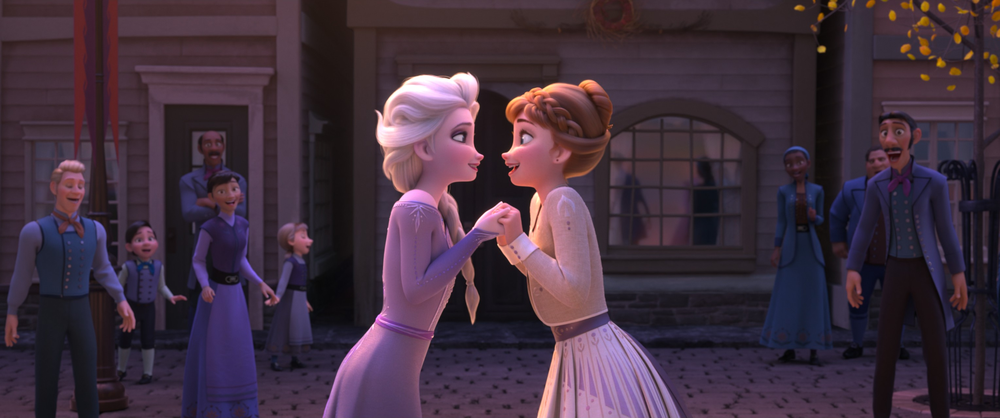
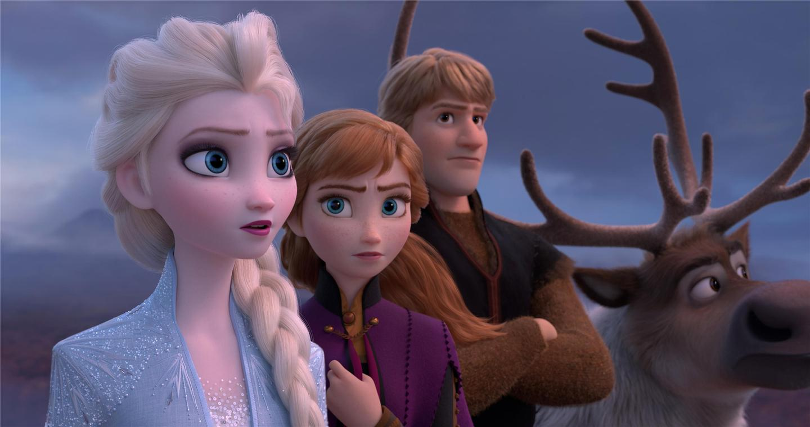

F2 造型志 · 五重身份
📖 这一页讲什么
F2 让艾莎的造型完成了最完整的演化。本页严格按电影时间顺序排列五套造型，每身标注出场场景与设计意图：
- 秋装（淡紫长裙，侧编发）—— Some Things Never Change · 秋日庆典 · 日常执政
- 睡衣（白色睡裙）—— 猜词游戏 · Into the Unknown · 被呼唤惊醒
- 探险装（蓝裙 + 浅色外套，编发）—— 启程北上 · 魔法森林
- 探险装脱外套扎马尾（白衣，高马尾）—— Show Yourself 前半段 · 遇水灵 · 阿塔霍兰
- 第五灵（白色露肩长裙，披发）—— Show Yourself 变装 · 终幕
🍂 第一套：秋装 —— 试图做普通女王



F2 开篇的艾莎已是加冕三年后的女王。这一身淡紫长裙以冰晶纹路装饰肩部与裙摆，侧编发替代了 F1 的盘发，整体更松弛、更日常。在《Some Things Never Change》的秋日庆典中，她穿着这身与安娜、克斯托夫、雪宝一起走过阿伦黛尔的街道——这是她「试图做一个普通女王」的最后造型，随后北地的呼唤将打破这份平静。
设计上，这条裙子的色调呼应了阿伦黛尔的秋日：淡紫与霜蓝的渐变，裙摆的冰晶纹路暗示她的魔法从未真正离开。与 F1 加冕礼服的厚重华丽相比，F2 秋装更轻盈、更贴身，暗示她内心的不安正在累积。
🌙 第二套：睡衣 —— 被呼唤惊醒的私人时刻


夜晚的猜词游戏后，艾莎换上简约的白色睡衣。这是全片最「私人」的造型——没有王冠，没有披风，只有一个被内心声音困扰的女孩。当北地的呼唤再次响起，她穿着这身睡衣走出卧室，在《Into the Unknown》中用魔法回应呼唤。睡衣的设计刻意「普通」，与后续的探险装、第五灵白裙形成对比：从压抑的日常，到行动的旅途，到超越的终幕。
🧳 第三套：探险装 —— 走向未知的旅人



收到北地的呼唤后，艾莎换上探险装束：蓝色内搭连衣裙 + 浅色长款外套，编发垂在一侧。这一身少了宫廷的仪式感，多了行动的自由——长靴适应北地地形，外套在魔法森林的暗色调中成为视觉焦点。设定集显示，这一身经历了多次迭代——从最初的厚重斗篷，到最终的轻便外套，每一次修改都在强化「旅人」而非「女王」的身份。
在魔法森林中，她穿着这身与大地巨人交锋、与北地人相遇、与火灵布鲁尼对峙。外套的半透明材质在光影中呈现出霜花般的质感，暗示她与自然元素的联结正在加深。
💧 第四套：探险装脱外套扎马尾 —— 阿塔霍兰前的蜕变

抵达黑海之滨后，艾莎脱去外套，将头发扎成高马尾，换上白色闪光上衣。这是全片最关键的「过渡造型」——她不再是旅人，而是即将直面真相的探索者。在这一身中，她驯服水灵（Nokk）、骑马穿越黑海、登上阿塔霍兰冰川。高马尾便于行动，白色上衣在冰原环境中几乎与背景融为一体，暗示她正在「成为」自然本身。
这一身常被误标为「第五灵白裙」，但它与终幕的第五灵造型有本质区别：此时她仍穿着长裤与长靴，头发扎成马尾，面料是不透明的闪光材质——这是「在路上」的造型，而非「已抵达」的终幕。《Show Yourself》的前半段（与母亲的歌声呼应、发现阿塔霍兰的秘密）都在这一身中完成，直到她发现真相、魔法爆发，才完成向第五灵的变装。
🧚 第五套：第五灵 —— 自然之灵的终幕

在阿塔霍兰深处发现真相后，艾莎的魔法爆发，完成了向第五灵的变装。白色露肩长裙几乎「非物质」——轻、透、与冰雪河流融为一体。头发披散开来，不再有任何束缚。这是艾莎最极致的「reveal」：她不再是穿衣服的人，而是衣服本身成了魔法的一部分。
第五灵白裙的设计经历了从「具体」到「抽象」的过程。早期版本还有明显的裙摆与装饰，最终版几乎消解了物质性——透明的面料、流动的线条、与冰雪河流融为一体的质感。设定集显示，这条裙子在不同光线下呈现出不同的质感：冰原上是冷白，河流中是透蓝，魔法森林中是柔光。
📖 设定集：终幕造型的设计语言革命
终幕白裙不只是「换了一身白衣服」，而是整个设计语言的转变。Brittney Lee 在设定集中解释了这一核心变化：
"We retained Elsa's shape language but changed the design language to better reflect her journey in this film. So rather than using snowflakes as Elsa's signature motif, we used the elements, which are visually depicted as a diamond shape. The color of each diamond denotes which element it represents—air, earth, fire, water—in jewel tones from warm to cool. As Elsa discovers her connection to the elements, they become part of her aesthetic and appear in her clothing. By the end she incorporates the full spectrum of elements as well as her snowflake into her outfit."
—— Brittney Lee，视觉开发艺术家 · 《The Art of Frozen II》p.48
美术总监 Michael Giaimo 则为「统一雪花（unity snowflake）」符号给出了定义：
"We designed the unity snowflake symbol as a visual manifestation of Elsa's connection to nature—she is the center from which each of the four elements of nature emanates."
—— Michael Giaimo，美术总监（production designer） · 《The Art of Frozen II》p.45


这两段访谈揭示了终幕造型的深层叙事：雪花不再是艾莎唯一的标志。随着她发现自己与四元素的联结，菱形（diamond）取代雪花成为她的新设计语言——每颗菱形代表一种元素，色调从暖到冷（air/earth/fire/water）。到终幕时，她同时容纳「完整元素光谱」与「雪花」，意味着她既回归了自我（雪花），又超越了自我（元素）。这就是「第五元素」的视觉化身。